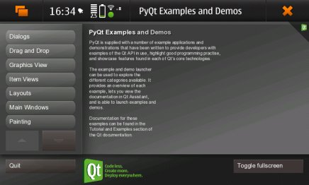
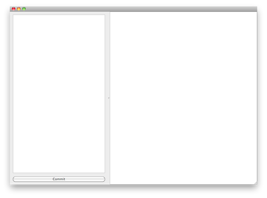
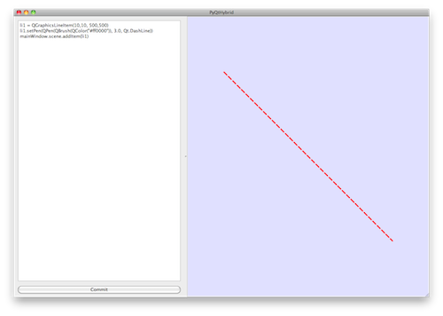
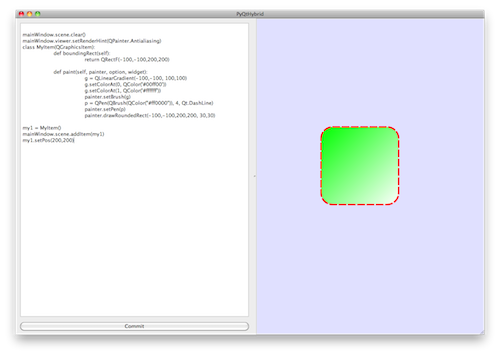

You may know about PyQt – python bindings to Qt frameworks. They are great and allow to prototype gui Qt based code in very fast way. To my mind you can develop faster in 1.5-2 times comparing to same development cycle with Qt. Well, development is little different – you do not have compilation stage, but need to be more cautions about testing to be sure that all branches of executed code are tested, because you never know until they are executed at least once.
Currently you can find PyQt even for Maemo – link

Anyway, PyQt is great, python programming is fast, but one of frequently asked questions is –
How can I integrate python scripting in my application and operate Qt Api from my scripts?, and why not?
When you can think that it is not possible, I would like to show the way how to do this and let’s even make working example.
Let’s start from scratch, assuming that you have installed and ready Qt Frameworks. (4.6.3 is used). First download such packages from PyQt homepage:
Build sip:
# tar -zxf sip-4.10.3.tar.gz
# cd sip-4.10.3
# python configure.py
# make
# sudo make install
Build PyQt:
# tar -zxf PyQt-mac-gpl-4.7.4.tar.gz
# cd PyQt-mac-gpl-4.7.4
# python configure.py
# make
# sudo make install
(BTW: you may need to set the environment variable if configure does not work)
# export QMAKESPEC=macx-g++
Now, it is time to design small Qt application which we will use as base for executing PyQt routines.
Let’s choose Canvas-based application – in such application we can prototype canvas items with PyQt
during runtime of the application. Make it simple: two areas: plain text editor for python codes on left and canvas on right.
PyQtHybrid.pro:
TEMPLATE = app
CONFIG += qt
QT += core gui
HEADERS += MainWindow.h
SOURCES += MainWindow.cpp Main.cpp
Main.cpp:
#include <QtGui>
#include "MainWindow.h"
int main(int argc, char ** argv) {
QApplication app(argc, argv);
MainWindow window;
window.resize(1000,700);
window.show();
return app.exec();
}
MainWindow.h:
#ifndef MainWindow_H
#define MainWindow_H
#include <QMainWindow>
class QPushButton;
class QGraphicsView;
class QGraphicsScene;
class QPlainTextEdit;
class MainWindow : public QMainWindow { Q_OBJECT
public:
MainWindow(QWidget * parent = 0L);
virtual ~MainWindow();
signals:
void runPythonCode(QString);
private slots:
void runPythonCode();
public:
QGraphicsView * viewer;
QGraphicsScene * scene;
QPlainTextEdit * editor;
QPushButton * pb_commit;
};
#endif // MainWindow_H
MainWindow.cpp:
#include <QtGui>
#include "MainWindow.h"
MainWindow::MainWindow(QWidget * parent):QMainWindow(parent) {
QSplitter * splitter = new QSplitter;
setCentralWidget(splitter);
QWidget * editorContent = new QWidget;
splitter->addWidget(editorContent);
QVBoxLayout * layout = new QVBoxLayout;
editorContent->setLayout(layout);
editor = new QPlainTextEdit;
layout->addWidget(editor);
pb_commit = new QPushButton(tr("Commit"));
connect(pb_commit, SIGNAL(clicked()),
this, SLOT(runPythonCode()));
layout->addWidget(pb_commit);
scene = new QGraphicsScene(this);
viewer = new QGraphicsView;
viewer->setScene(scene);
splitter->addWidget(viewer);
splitter->setSizes(QList<int>() << 400 << 600);
}
MainWindow::~MainWindow() {;}
void MainWindow::runPythonCode() {
emit runPythonCode(editor->toPlainText());
}
As result we have a window with editor (left) and canvas (right):

Now it is time to modify application to get it working with PyQt. We are going to:
-
Change application to dynamic library
-
Create wrappings for MainWindow class
-
Make Main.py instead of C main() routine
For first point we just change TEMPLATE to lib, exclude Main.cpp, and build the shared lib.
PyQtHybrid.pro:
TEMPLATE = lib
CONFIG += qt
QT += core gui
HEADERS += MainWindow.h
SOURCES += MainWindow.cpp
Now create folder “sip”. Inside we create a wrappings for our MainWindow class:
MainWindow.sip:
%Module PyQtHybrid 0
%Import QtGui/QtGuimod.sip
%If (Qt_4_2_0 -)
class MainWindow : QMainWindow {
%TypeHeaderCode
#include "../MainWindow.h"
%End
public:
MainWindow();
virtual ~MainWindow();
signals:
void runPythonCode(QString);
private slots:
void runPythonCode();
public:
QGraphicsView * viewer;
QGraphicsScene * scene;
QPlainTextEdit * editor;
QPushButton * pb_commit;
};
%End
To generate wrappings from sip we need a configure.py and PyQtHybridConfig.py.in.
configure.py:
import os
import sipconfig
from PyQt4 import pyqtconfig
build_file = "PyQtHybrid.sbf"
config = pyqtconfig.Configuration()
pyqt_sip_flags = config.pyqt_sip_flags
os.system(" ".join([ \
config.sip_bin, \
"-c", ".", \
"-b", build_file, \
"-I", config.pyqt_sip_dir, \
pyqt_sip_flags, \
"MainWindow.sip" \
]))
installs = []
installs.append(["MainWindow.sip", os.path.join(config.default_sip_dir, "PyQtHybrid")])
installs.append(["PyQtHybridConfig.py", config.default_mod_dir])
makefile = pyqtconfig.QtGuiModuleMakefile(
configuration=config,
build_file=build_file,
installs=installs
)
makefile.extra_libs = ["PyQtHybrid"]
makefile.extra_lib_dirs = [".."]
makefile.generate()
content = {
"PyQtHybrid_sip_dir": config.default_sip_dir,
"PyQtHybrid_sip_flags": pyqt_sip_flags
}
sipconfig.create_config_module("PyQtHybridConfig.py", "PyQtHybridConfig.py.in", content)
PyQtHybridConfig.py.in
from PyQt4 import pyqtconfig
# @SIP_CONFIGURATION@
class Configuration(pyqtconfig.Configuration):
def __init__(self, sub_cfg=None):
if sub_cfg: cfg = sub_cfg
else: cfg = []
cfg.append(_pkg_config)
pyqtconfig.Configuration.__init__(self, cfg)
class PyQtHybridModuleMakefile(pyqtconfig.QtGuiModuleMakefile):
def finalise(self):
self.extra_libs.append("PyQtHybrid")
pyqtconfig.QtGuiModuleMakefile.finalise(self)
Time to build Python module in “sip” folder (we assume that C++ lib is already built in top folder)
# python configure.py
# make
Almost everything is ready, time to connect everything in Main.py script:
import sys
sys.path.append('sip')
from PyQt4.QtCore import *
from PyQt4.QtGui import *
from PyQtHybrid import *
class RunScript(QObject):
def __init__(self, mainWindow):
QObject.__init__(self)
self.mainWindow = mainWindow
def runScript(self, script):
mainWindow = self.mainWindow
exec(str(script))
a = QApplication(sys.argv)
w = MainWindow()
r = RunScript(w)
w.setWindowTitle('PyQtHybrid')
w.resize(1000,800)
w.show()
a.connect(w, SIGNAL('runPythonCode(QString)'), r.runScript)
a.connect(a, SIGNAL('lastWindowClosed()'), a, SLOT('quit()') )
a.exec_()
Now, if you run the Main.py you will get same window as we saw before, but, python code entered in left editor panel can be committed for execution by … well application itself…
We have an application which can program itself – that’s cool.
Let’s try small code snippets like:
mainWindow.statusBar().show()
Oh! status bar is appeared in our application. Well, more complex maybe – let’s change background of canvas:
mainWindow.scene.setBackgroundBrush(QColor('#e0e0ff'))
Can we create new objects? Of course yes:
li1 = QGraphicsLineItem(10,10, 500,500)
li1.setPen(QPen(QBrush(QColor("#ff0000")), 3.0, Qt.DashLine))
mainWindow.scene.addItem(li1)

Can we create new classes just in real time and instanciate them???
Sure yes!!!. Let’s create subclass of QGraphicsItem and make custom painting:
mainWindow.scene.clear()
mainWindow.viewer.setRenderHint(QPainter.Antialiasing)
class MyItem(QGraphicsItem):
def boundingRect(self):
return QRectF(-100,-100,200,200)
def paint(self, painter, option, widget):
g = QLinearGradient(-100,-100, 100,100)
g.setColorAt(0, QColor('#00ff00'))
g.setColorAt(1, QColor('#ffffff'))
painter.setBrush(g)
p = QPen(QBrush(QColor("#ff0000")), 4, Qt.DashLine)
painter.setPen(p)
painter.drawRoundedRect(-100,-100,200,200, 30,30)
my1 = MyItem()
mainWindow.scene.addItem(my1)
my1.setPos(200,200)

Well, so we can do everything with our small application – we can program it in real time. We can even generate code by program itself to execute it and more. Anyway, this also can be used for performance balancing when you can quickly prototype your code in python, and then transfer such code into C++ to make it running fast.
Good example – developing canvas-based games, when it can be really helpful and convenient to work with python code to make the logic, drawing etc and then migrate some code into C++.
You can ask what is the difference to just programming with your editor? – You are coding your application while it is running. This is very new approach to programming with Qt. There is one especiality – you can loose your programming when exit , So, it makes sense to modify the application to save all your code snippets to files.
It’s up to you.
Let’s hope to see LGPL PyQt packages sometimes…